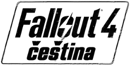

Základní varianty češtiny

Čeština pro Fallout 4 VR
Češtinu ze ZIP balíčku je možné použít i v rámci Fallout 4 VR.
Titulky k herním videím
Na PC je možné doinstalovat herní videa s vypálenými českými titulky v rámci samostatného ZIP balíčku. Konzolisté mají možnost si videa s titulky alespoň pustit na YouTube.
Beta verze a chyby
Budeme rádi, pokud nám odhalené chyby nahlásíte (viz odkaz v záhlaví stránky). Před založením chyby se ujistěte, že:
- máte aktuální verzi češtiny
- chyba nebyla zadána již někým jiným
- není chyba způsobena hraním s DLC nebo jinými herními modifikacemi
- nejde o známou neopravitelnou chybu
Manuální instalace
Pokud instalujete češtinu ze ZIP balíčku, stačí provést následující kroky:
- Obsah archivu rozbalte do složky
Fallout 4/Data. - Soubor
Fallout4Custom.ininahrajte do~/Dokumenty/My Games/Fallout4/ - Spusťte hru a hrajte :)
Autoři překladu
Překlad mají na svědomí zejména:
- Palko (vedoucí překladu)
- Dumec (překladatel / korektor)
- Widl (překladatel)
- Jane (překladatelka)
- Tereza (překladatelka)
- Stoupa (vedoucí korektury)
- Plikon (překladatel)
- Sonny (překladatel)
- Peet (překladatel)
Na překladu se významně podíleli:
- Martin (korektor / tester)
- Milhousek (tester)
- MANUS-manww (tester)
- Radek (tester)
- Jakub (překladatel)
- Rendoss (překladatel)
- Runciter (překladatel)
- Kenosák (překladatel)
Na překladu dále spolupracovali: Hynex (překladatel), Vilda (překladatel), Pelo (překladatel), Kovka (překladatel), Jiřina (testerka), Markéta (testerka) a RekordyTT (tester).
Použité zdroje
Pro hackovací slovník terminálů jsme využili Český národní korpus: Abecední a retrográdní slovníky. Ústav Českého národního korpusu FF UK, Praha 2010.
Pro podporu českých znaků jsme využili následující volně dostupné fonty Ubuntu Mono Regular, RobotoMono Regular, OpenSans Regular, Caveat Regular a KaushanScript Regular.
Překlad by pravděpodobně nevznikl bez následujících online zdrojů:
- Slovník Lingea
- Slovnik.cz
- Internetová jazyková příručka
- Paralelní korpus InterCorp via KonText
- Nukapedia
Speciální poděkování patří mcguffinovi, autorovi překladače Fallout4Translator, který několikrát provedl netriviální úpravy své aplikace dle našich přání.
Významnou roli má i komunita portálu prekladyher.eu, která poskytla výchozí zázemí, na jehož základě se překladatelský tým dal dohromady.
Instalátor vznikl za pomoci WiX Toolset. Ikonka překladu pochází z FALLOUT 4 HIGH-RES ICON SET, autorem obrázku energozbroje je Kman-Studio.